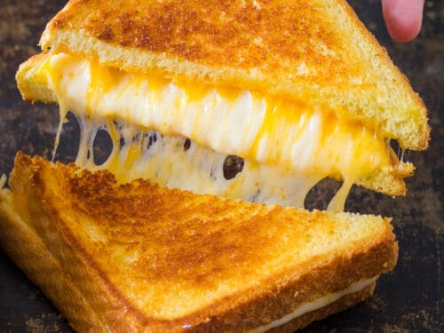

Cheese Toast

Description
Whether paired with a bowl of chilli, or eaten by its own, this cheesy sandwhich will please your tastebuds. This recipe will show you how to create this family favorite!
Ingredients
- Sliced bread of your choice
- Mayo
- Sliced cheese of your choice
- Canola oil
Steps
- Lightly oil a pan on med-low heat.
- Spread mayo on outer sides of two slices of bread.
- Add desired cheeses and top with sliced bread.
- Add sliced bread to pan.
- Flip bread after a few minutes, to ensure a golden coating.
- After a few minutes on the other side, remove from pan.
- Enjoy!